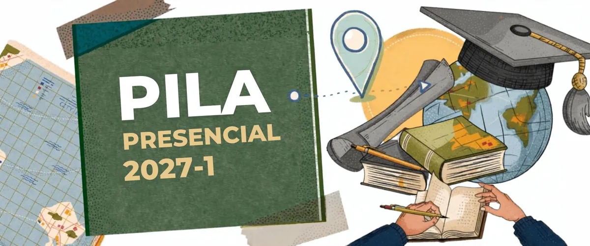

Intercâmbio · Edital AICI/UEMG nº 02/2026
PILA 2027-1: um semestre de graduação na América Latina
A UEMG abriu a seleção do Programa de Intercâmbio Acadêmico Latino-Americano. A universidade que recebe cuida do alojamento e da alimentação.
- Vagas 11 na graduação, na Argentina, Colômbia, México e Paraguai, com opções para Direito e Engenharia Civil
- Quando 1º semestre de 2027
- Quem pode Quem já fez de 40% a 90% do curso e tem coeficiente de rendimento de 70 ou mais
- Inscrição Até 1º de outubro de 2026, às 23h59, com o e-mail institucional
Peça já a assinatura da coordenação do curso na Ficha do Estudante e o histórico assinado pela secretaria.
Assistência estudantil · Edital PROEX/COAC nº 05/2026
Bolsa para Povos e Comunidades Tradicionais
O PROPCTs paga R$ 1.400 por mês a estudantes indígenas, quilombolas, ciganos e de outros povos e comunidades tradicionais. A Unidade Guanhães está no edital.
- Valor R$ 1.400 por mês
- Cadastro De 21 de setembro a 5 de outubro de 2026, em propcts.uemg.br
- Quem pode Estudantes de graduação presencial ou de mestrado e doutorado que pertençam a povo ou comunidade tradicional
- Atenção A conta precisa ser corrente e no seu nome. Poupança e conta salário não servem
Webinário sobre Saúde Mental e Cuidado Acadêmico
V Conecta Mente: Procrastinação Acadêmica
Por que adiamos aquilo que sabemos que precisamos fazer?
- Quando Sexta, 6 de novembro de 2026, das 17h às 18h30
- Onde Transmissão ao vivo pela TV UEMG
- Palestra Psicóloga Giselli Oliveira
- Mediação Carla Paiva
- Para quem Estudantes, docentes, técnicos administrativos, familiares e comunidade acadêmica
Realização da UEMG, pela PROEX, COAC e os NAEs das Unidades.
Serviços
Clique e vá direto ao ponto
Passo a passo · 10 etapas
Ajuda com o e-mail institucional
Primeiro acesso e redefinição de senha, explicados tela por tela.
AVA Moodle e Lyceum
Sistemas acadêmicos
Onde ficam as aulas, os materiais, as notas e a matrícula, com o passo a passo do primeiro acesso.
Semestre 2026.2 · 12 turmas
Horários de aulas
Grade de Direito e Engenharia Civil, com busca por disciplina ou professor.
Ferramenta do estudante
Calculadora de média e faltas
Quantos pontos faltam para os 60 e quantas faltas ainda cabem sem reprovar.
Planta ilustrada
Mapa do campus
Onde fica cada sala, laboratório e serviço, inclusive a sala do NAE.
Ano de 2026
Calendário acadêmico
Feriados, prazos de matrícula, trancamento, exames e fim de semestre, mês a mês.
Saúde mental
Apoio psicológico
CAPS gratuito em Guanhães, plataformas com preço social e o acolhimento do NAE.
Prédio do Administrativo
Sala do NAE e atendimento
Terças e quintas, das 18h às 19h. Quartas, com agendamento por e-mail.
Quem somos
Sobre o NAE
Acolhimento, apoio pedagógico, assistência estudantil e acessibilidade.
Dúvidas rápidas
Qual é o meu e-mail?
Esqueci minha senha
Como entro no Moodle?
Onde fica minha sala?
Que aula tenho hoje?
Onde fica o NAE?
Quando é o próximo feriado?
Preciso de apoio psicológico
Quantas faltas posso ter?
Internet na Unidade
Wi-Fi da UEMG Guanhães
Três redes pelo prédio, a mesma senha para todas.
- UEMG - AP 01 Perto da cantina
- UEMG - AP 02 Perto do auditório
- UEMG - AP 03 Perto das salas do fundo
- Senha
Guanhaes@2026
Novidades